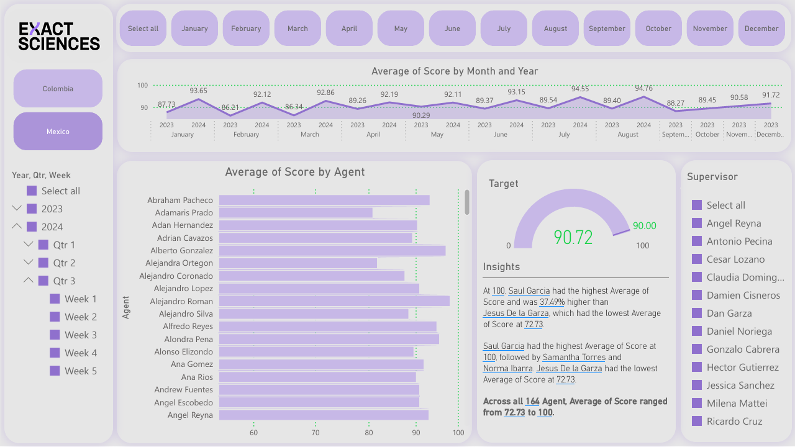
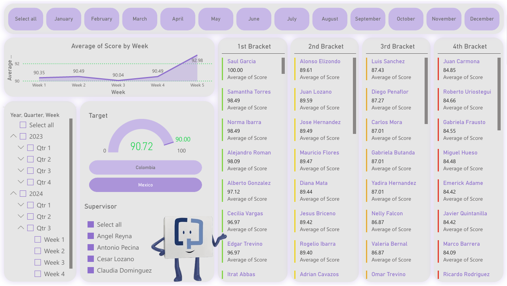
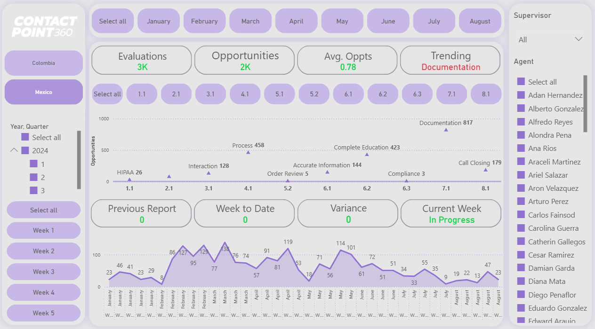
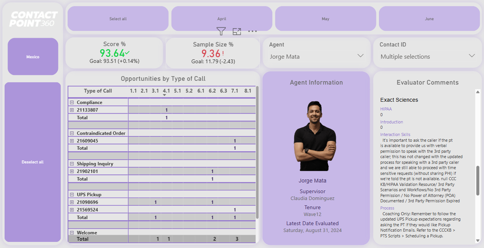
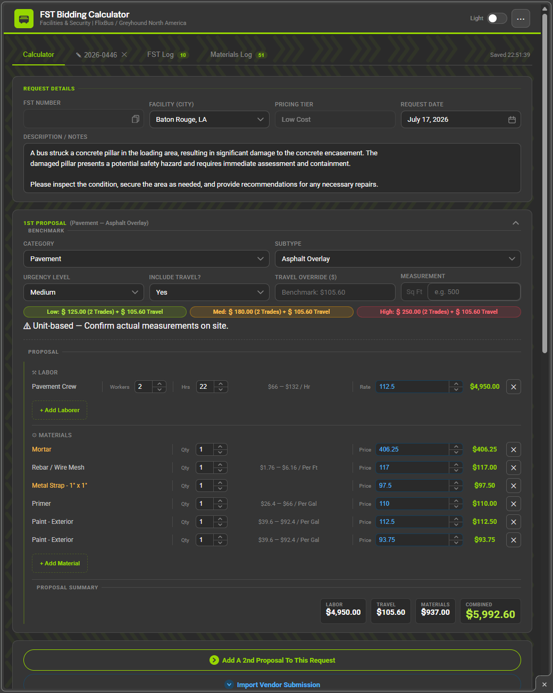
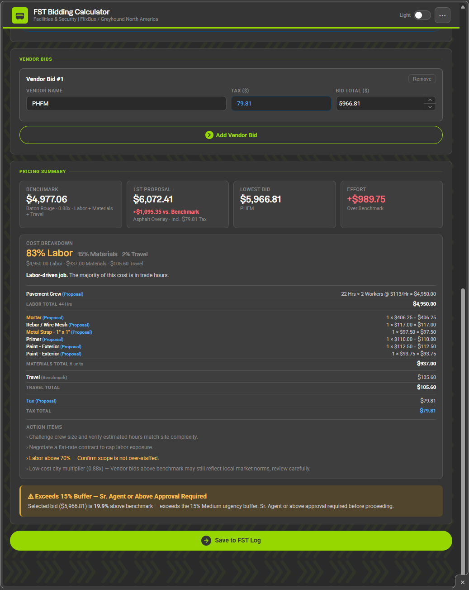
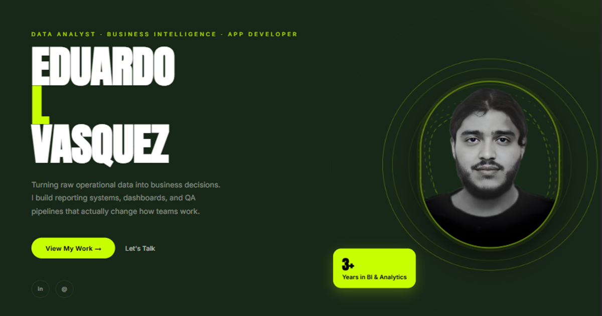
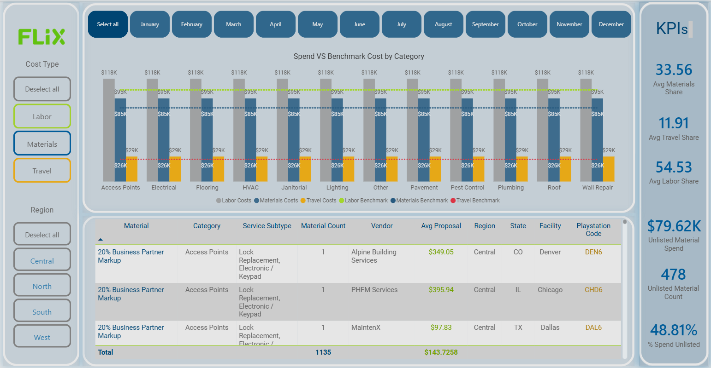
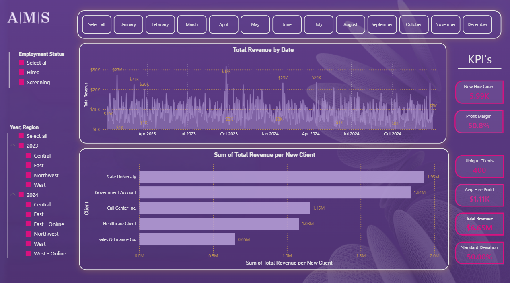

Data Analyst · Power BI · Procurement Intelligence
Turning raw operational data into decisions. I build reporting systems, procurement dashboards, and QA pipelines that actually change how teams work.
I'm a results-driven Data Analyst focused on eliminating broken processes, automating workflows, and building reporting systems that departments can actually rely on.
Currently at FLIX / Greyhound, leading procurement analytics for North America's post-acquisition integration — building vendor intelligence from scratch, not from templates. Previously at Exact Sciences, I designed QA performance dashboards tracking 164 agents across two countries.
I don't just analyze data — I build the infrastructure that makes analysis possible.
I strongly believe that information data is how we communicate in the workplace; with that in mind, I help organizations ask the right questions and take action through informed, data-driven decisions.
Three-page QA system for 164 agents across Mexico and Colombia. Agent scoring, bracket ranking for calibration sessions, and opportunity trending by failure category across 3K+ evaluations.
Internal HTML procurement tool built from zero. Vendor proposal intake form feeding directly into a benchmarking calculator — replacing 120+ inconsistent monthly vendor reports.
End-to-end vendor benchmarking system. 500+ incidents across 13 states, spend vs. benchmark by Labor / Materials / Travel. Surfaced $79.6K in unlisted material spend invisible until this existed.
A concept dashboard built around AMS to demonstrate what data-driven operational visibility looks like in practice. All data is simulated — no actual business data from the company was used. This is a showcase of what's possible when the right questions get asked.
A visual look at the dashboards and tools built to drive real operational decisions.

Tracks average quality scores for 164 agents across Mexico and Colombia against a 90-point target. Month-over-month trend lines surface performance gaps at a glance.

Bracket view built for calibration sessions — tiers performance so supervisors can prioritize coaching. Opportunity tracker maps 3K+ evaluations to failure categories by week.

Longitudinal scorecard view showing quality score trajectories over time — used to validate coaching effectiveness and track whether corrective actions are moving the needle across teams.

Individual agent drill-down with evaluator comments, contact-level scoring, and opportunity breakdown by call type — the primary tool used during 1:1 coaching and calibration sessions.

Structured intake form that standardizes how vendor quotes are submitted — replacing 120+ inconsistent monthly reports. Built to feed directly into the benchmarking engine with zero manual formatting.

Compares vendor proposals against category benchmarks in real time — auto-flagging overbids, calculating variance by city and service type, and generating the approval signals that feed the Power BI reporting pipeline.

Tracks 500+ facility maintenance incidents across 13 states. Spend vs. benchmark by month, urgency triage, resolution rate, and category breakdown — giving Procurement and Field Support a shared operational view.

Drills into vendor-level cost data by Labor, Materials, and Travel against benchmarks per service category. Surfaces overbidding patterns and unlisted spend — $79.6K in material costs invisible before this dashboard existed.

A little good faith goes a long way.
I put this dashboard together on my own time using mock data — nothing here came from AMS systems or internal records. Every number is simulated. Every visual is intentional. The point isn't to show what AMS looks like today; it's to show what a data-driven version of it could look like — and to prove I don't wait to be asked before I start thinking about a problem.
If this lands in front of the right person: hi. Let's talk.
Open to new opportunities, collaborations, and interesting data problems. Let's build something useful.